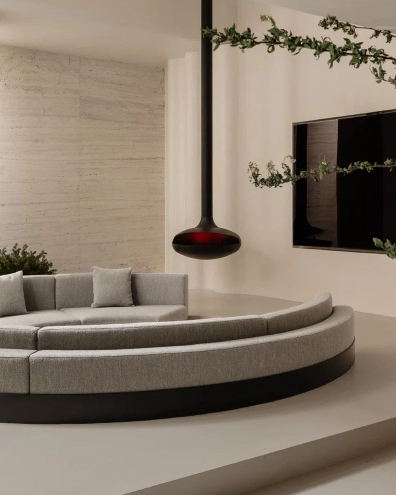
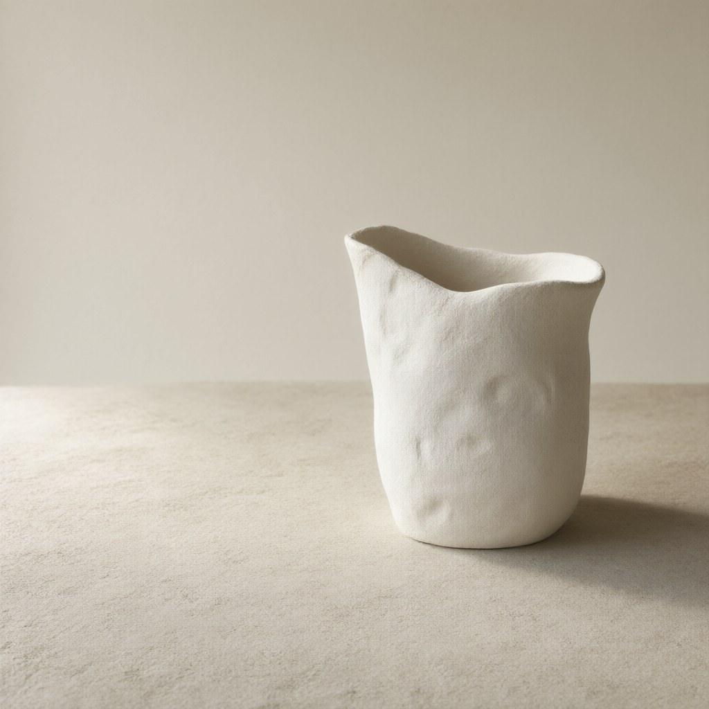
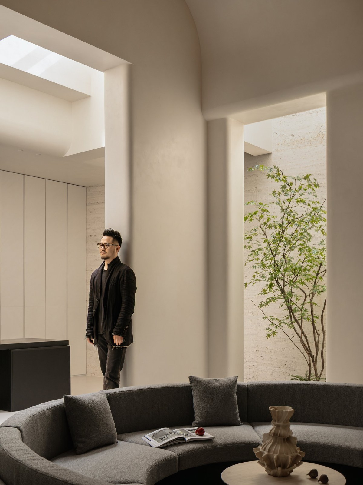

LIGHT
Let light enter first / furniture follows / the order of a room is decided by the day
上海 中国 / SHANGHAI CHINA
INTERIOR ARCHITECTURE
自然主义 自然疗愈
PRIVATE HOMES & VILLAS
NATURALISM / WABI SABI / INTERIOR DESIGN
让光先进来 让生活发生
A Shanghai studio for private homes and villas
less decoration / more light / material and time

WEIJIE DESIGN
NATURALISM / NATURAL HEALING
SHANGHAI CHINA
NEW WORKS / 2026
01 PHILOSOPHY
A home is not a container to be filled
it is where light wind and time
are allowed to settle
We believe a good space does not explain itself / first the light then the air then the way people sit / material proportion and style come last
Let light enter first / furniture follows / the order of a room is decided by the day
Wood stone paper clay / surfaces that keep the trace of time
Not made to be understood on day one / still wanted in year five
02 SELECTED WORKS
Every house begins on site / light material and the habits of the people who will live there
ALL WORKS 0703 MATERIAL / OBJECTS
A conversation between clay and time
settling slowly into the contour of an object
emptiness is another kind of wholeness


04 STUDIO
庞森予PANG SENYUPRINCIPAL / PRIVATE HOMES & VILLAS
I am Pang Senyu / principal of Weijie Design in Shanghai / I work on private homes and villas / over the years I have come to believe one thing / a good space does not explain itself
Before a project I stand on site for a while / where the light comes from / where the wind goes / where people naturally sit / these matter more than style
05 SERVICE
Full-service private homes and villas / remote projects in other cities and overseas move stage by stage / we are on site at key moments
HOW WE WORKFull-service design from plan to completion / interiors lighting and furniture in one hand
Floors and circulation first / then style furniture and budget
Keep the structure / change the atmosphere with material light and joinery
Furniture textiles and objects / arranged around light and the rhythm of daily life
Oak plaster clay / surfaces that change with time
Clean lines / no visible gaps / proportion carries the space
Low windows tatami timber screens / courtyard light brought inside
Keep the original frame / rearrange it with light and material
METHOD
A clear list for every line / set the total and the priorities before choosing materials / no surprise revisions
AI for option comparison material search and drawing checks / the repetitive work goes to tools / time stays on site
Years of notes on materials craft and suppliers / every quotation has a reason
06 CONTACT
CONTACT PAGEIf you have a house you have not fully imagined yet / write to us / tell us where it is and what you have in mind / that is enough to begin